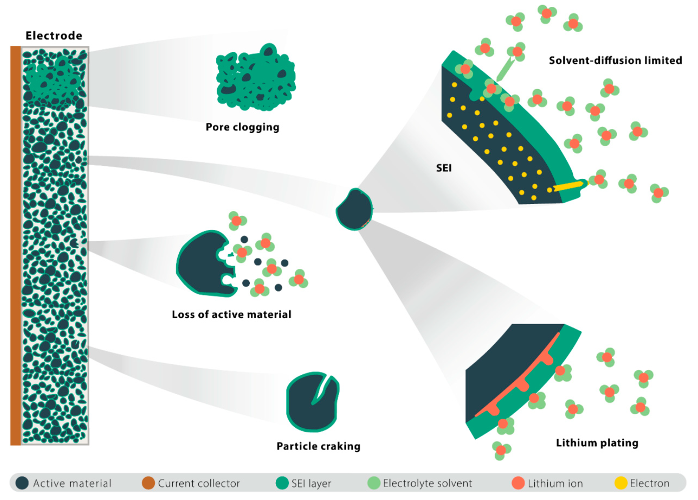
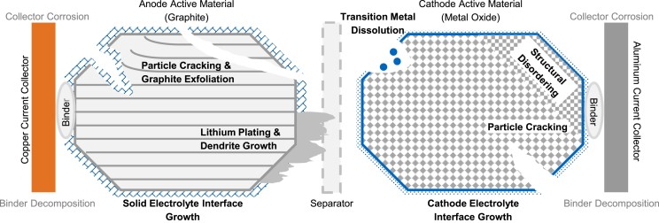
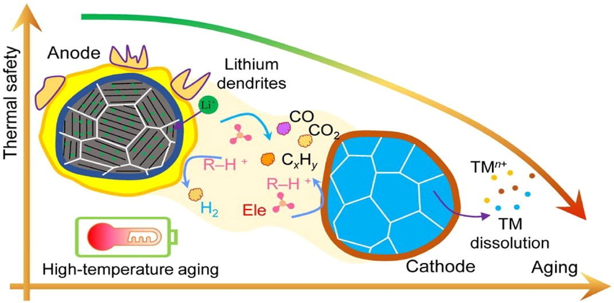
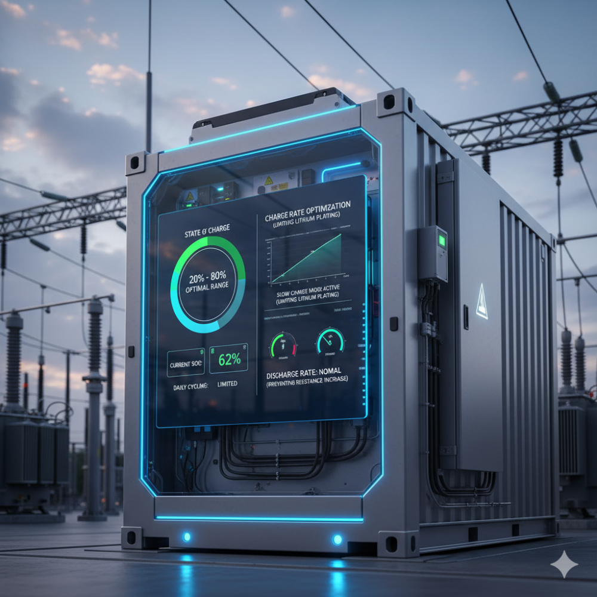
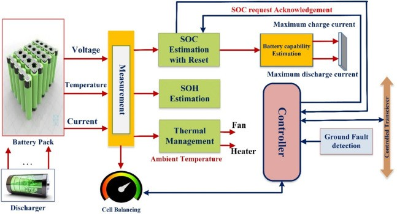
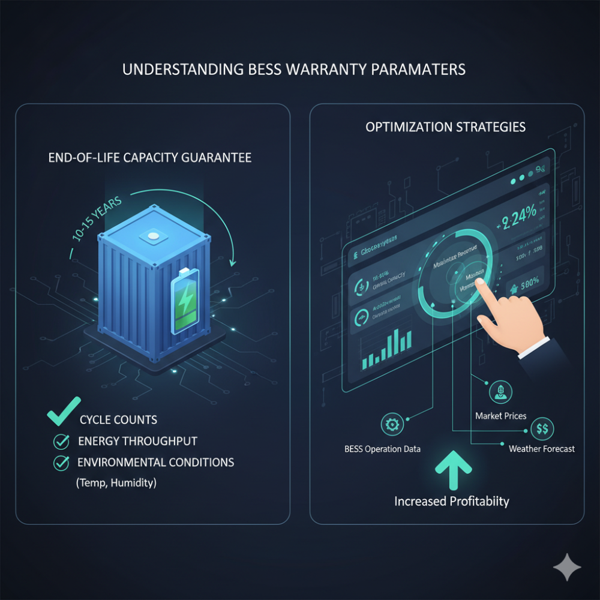
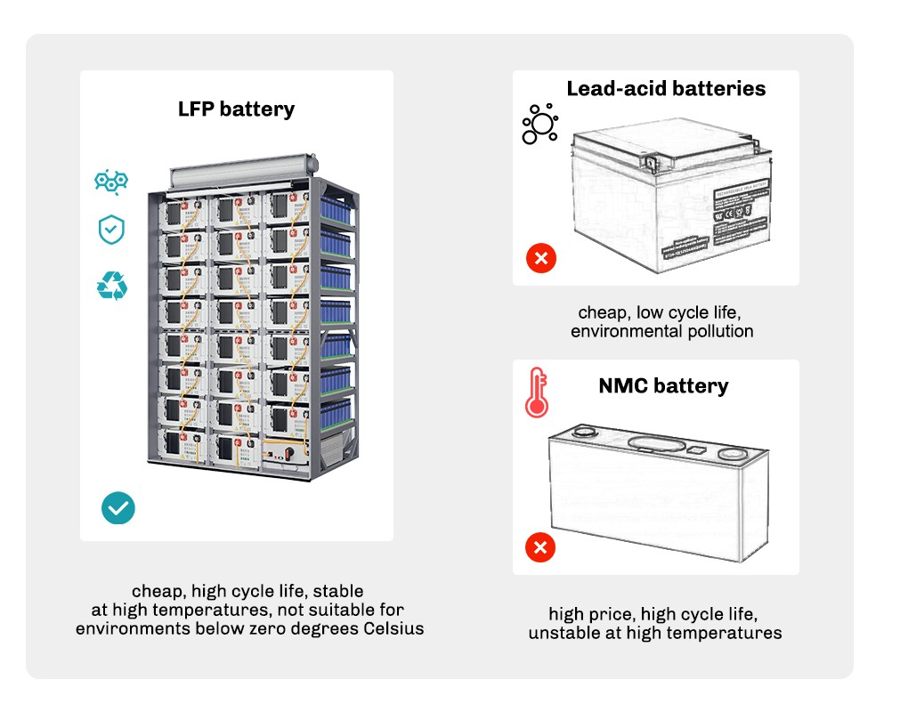
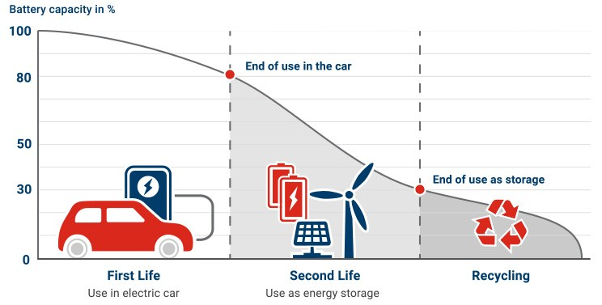
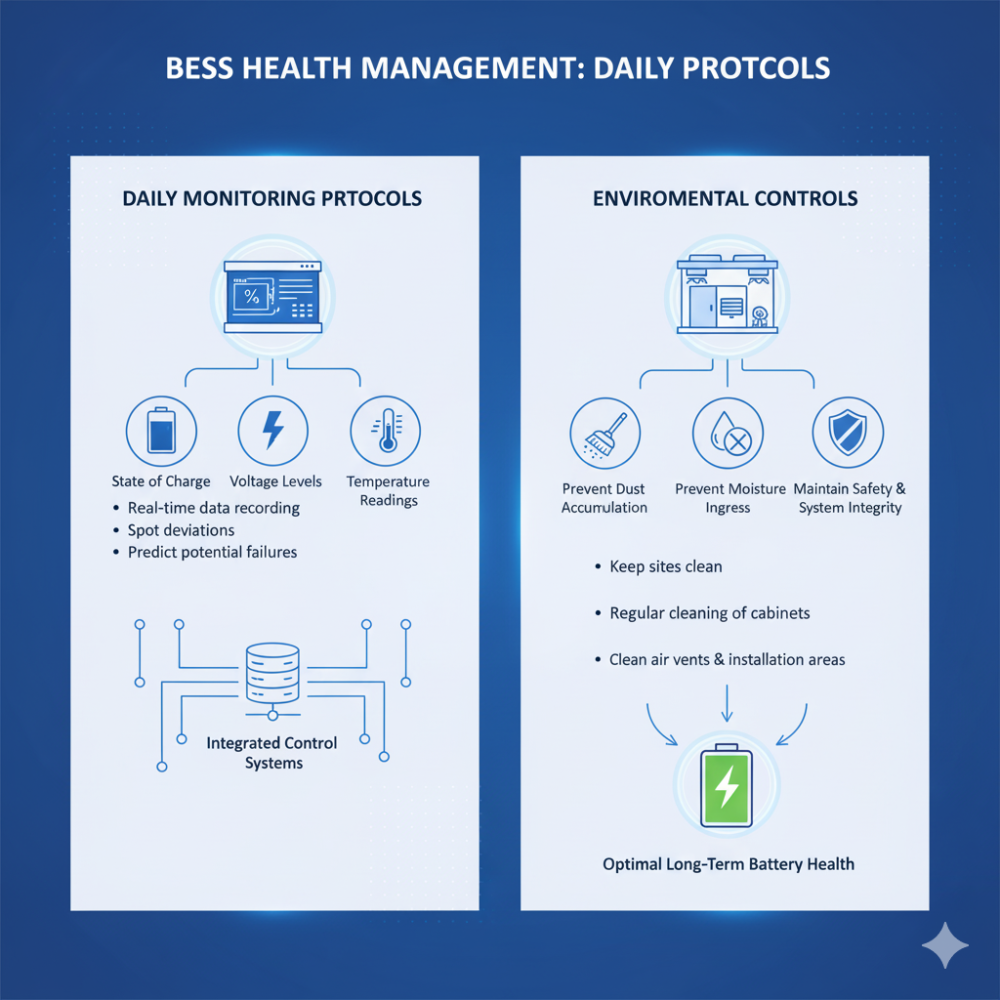
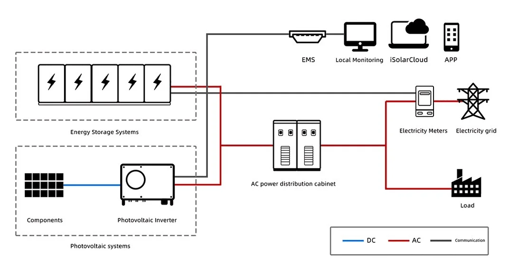

Battery Energy Storage Systems (BESS) represent a cornerstone technology for modern grid stability and renewable energy integration. However, like all energy storage technologies, lithium-ion batteries in BESS face inevitable capacity degradation over time. Understanding and managing this degradation is crucial for maximizing system performance, extending operational life, and ensuring long-term financial viability.
This comprehensive guide explores the mechanisms behind battery degradation and presents proven strategies to maintain optimal BESS health throughout their operational lifetime.
Understanding Battery Degradation Mechanisms
Primary Degradation Causes: Battery degradation in BESS occurs through multiple interconnected mechanisms that affect both capacity and performance over time. The primary causes include calendar aging, which occurs naturally even when batteries are not in use, and cycle aging from repeated charge-discharge operations. Research indicates that loss of active lithium-ion sources is the primary cause of capacity fade, rather than physical deterioration of electrode materials, at least until batteries reach 80% of their initial capacity.

Electrochemical Factors: At the cellular level, degradation manifests through several key processes. Solid Electrolyte Interface (SEI) film growth at the negative electrode represents the largest contributing factor to capacity fade. This film formation consumes lithium ions and increases internal resistance over time. Additionally, transition metal dissolution from the cathode can migrate to the anode, further reducing lithium diffusivity and causing mechanical fracture.

Environmental Stressors: Temperature extremes significantly accelerate degradation rates. Studies show that capacity fade increases substantially with elevated temperatures, with cells cycled at 55°C showing dramatically reduced lifespans compared to those operated at 25°C. Similarly, electrical stresses including overcharging, over-discharging, and current fluctuations contribute significantly to capacity loss and performance degradation.

Strategic Approaches to Degradation Management
Smart Charging and Operational Protocols
Optimal State of Charge Management: One of the most effective degradation prevention strategies involves maintaining batteries within optimal state of charge (SOC) ranges. Keeping batteries between 20% and 80% SOC significantly reduces stress on battery chemistry and prevents both overcharging and deep discharge conditions that accelerate wear. This approach requires sophisticated Battery Management Systems (BMS) that can implement charging restrictions to limit daily cycling and slow calendar aging.
Charge Rate Optimization: Controlling charging rates proves critical for long-term battery health. Fast charging generates excess heat and accelerates lithium plating, which contributes significantly to battery wear. Implementing slower charging rates, particularly at high SOC levels, can substantially extend battery lifespan. Similarly, avoiding high-current discharges helps reduce internal resistance increases and capacity fade.

Advanced Battery Management Systems
Real-Time Monitoring and Control: Modern BMS implementations provide comprehensive real-time monitoring of critical parameters including voltage, current, temperature, and SOC across individual cells. These systems enable continuous monitoring of key performance indicators such as state of charge, depth of discharge, round-trip efficiency, and cell voltage balancing to ensure uniform aging across the battery pack.
Predictive Health Assessment: Advanced BMS architectures incorporate health index algorithms that accurately capture battery degradation trajectories and improve SOH prediction accuracy. These systems utilize attention-based deep learning models to analyze time series data and predict battery state of health with high precision, enabling proactive maintenance decisions.

Thermal Management Excellence
Temperature Control Systems: Implementing robust thermal management systems represents a fundamental requirement for BESS longevity. Maintaining batteries within optimal temperature ranges of 15-35°C significantly reduces thermal stress and degradation rates. Modern BESS deployments utilize various cooling approaches including air cooling for smaller systems, liquid cooling for high-power applications, and phase change material (PCM) cooling for enhanced thermal stability.
Cooling System Design: Effective thermal management systems must ensure uniform temperature distribution to prevent localized hotspots that can lead to accelerated degradation. Liquid cooling systems prove particularly effective for high-capacity installations, offering precise temperature control and efficient heat dissipation. These systems should integrate with BMS for real-time monitoring and automated control responses.

Comprehensive Maintenance Strategies
Preventive Maintenance Schedules: Establishing structured preventive maintenance protocols helps identify potential issues before they impact system performance. Regular monitoring of performance parameters including SOC, temperature, and voltage balancing enables early detection of degradation patterns. Monthly visual inspections should focus on identifying physical damage, corrosion, or electrolyte leakage.
Predictive Maintenance Implementation: Moving beyond scheduled maintenance, predictive maintenance approaches utilize continuous monitoring and data analytics to identify maintenance needs based on actual equipment condition. This strategy proves particularly valuable for BESS operations, where traditional reactive maintenance responses often render systems unrecoverable.
Long-Term Asset Management
Warranty Management and Performance Tracking
Understanding Warranty Parameters: BESS warranties typically specify end-of-life capacity guarantees ranging from 60-80% of original capacity after 10-15 years of operation. These warranties often include specific operational limits regarding cycle counts, energy throughput, and environmental conditions that must be maintained to preserve warranty coverage. Managing these parameters while maximizing revenues requires sophisticated optimization strategies.

Performance Monitoring Systems: Continuous performance tracking enables operators to compare actual degradation profiles against predicted curves and make data-driven decisions regarding capacity augmentation or warranty claims. Modern monitoring platforms provide predictive capabilities that help operators track warranty status across diverse battery assets with varying penalty formulas.
End-of-Life Planning and Circular Economy Integration
Decommissioning Strategies: Planning for BESS end-of-life should begin during initial project development phases. Typical BESS lifespans range from 10-20 years, with NMC batteries averaging 10-15 years and LFP batteries extending to 15-20 years under proper management. Comprehensive decommissioning plans should address safety protocols, material recovery, and regulatory compliance requirements.

Second-Life Applications: Before proceeding to recycling, retired BESS batteries often retain 80% of original capacity, making them suitable for second-life applications including residential energy storage, backup power systems, and grid stabilization services. The global second-life battery market is projected to reach $4.2 billion by 2035, presenting significant value recovery opportunities.
Recycling and Material Recovery: Advanced recycling technologies demonstrate impressive recovery rates for critical materials, with nickel (96.1%), manganese (95.7%), and cobalt (97.1%) recovery through chemical precipitation processes. Lithium recovery approaches 98% efficiency through targeted extraction methods, supporting circular economy principles by reducing dependence on virgin materials.

Implementation Best Practices
Operational Optimization
Daily Monitoring Protocols: Successful BESS health management requires daily monitoring of critical performance parameters including state of charge, voltage levels, temperature readings, and alarm conditions. Modern integrated control systems provide real-time data recording that enables operators to spot deviations from normal operation and predict potential failures before they occur.
Environmental Controls: Maintaining optimal environmental conditions proves essential for long-term battery health. Sites and housings should be kept clean to prevent dust accumulation and moisture ingress that can lead to corrosion and insulation breakdown. Regular cleaning of battery cabinets, air vents, and installation areas maintains both safety and system integrity.

Technology Integration
Firmware and Software Management: Regular firmware updates help maintain system compatibility and enhance performance capabilities. Manufacturers continuously release updates to fix bugs, enhance cybersecurity, and improve performance. Enabling automatic updates or implementing periodic manual upgrades ensures BESS systems remain compatible with evolving grid requirements.
System Integration: Effective degradation management requires seamless integration between BMS, thermal management systems, and overall energy management systems. This integrated approach enables coordinated responses to changing conditions and optimal system-wide performance.

Future Considerations and Emerging Technologies
The BESS industry continues evolving with new technologies and approaches that promise enhanced degradation management. Advanced cooling materials including nanomaterials like graphene and carbon nanotubes offer potential for enhanced heat transfer. Additionally, emerging battery chemistries and management algorithms continue improving degradation resistance and predictive capabilities.
As global BESS deployment is expected to expand 56% over the next five years, reaching over 270 GW by 2026, implementing comprehensive degradation management strategies becomes increasingly critical for project success. The integration of artificial intelligence and machine learning in battery management systems promises even more sophisticated predictive capabilities and optimization strategies.

Conclusion
Managing BESS degradation requires a comprehensive approach combining advanced battery management systems, optimal operational protocols, robust thermal management, and proactive maintenance strategies. By understanding degradation mechanisms and implementing proven mitigation strategies, operators can significantly extend system lifespans, maintain performance levels, and maximize return on investment.
The key lies in treating degradation management as an integral part of BESS operations from day one, rather than addressing it reactively as systems age. With proper implementation of these strategies, BESS operators can achieve optimal system performance throughout the entire operational lifecycle while preparing for sustainable end-of-life management.